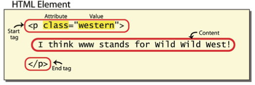
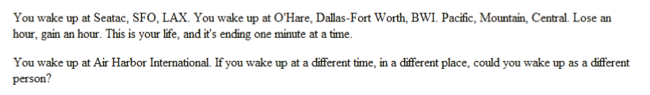
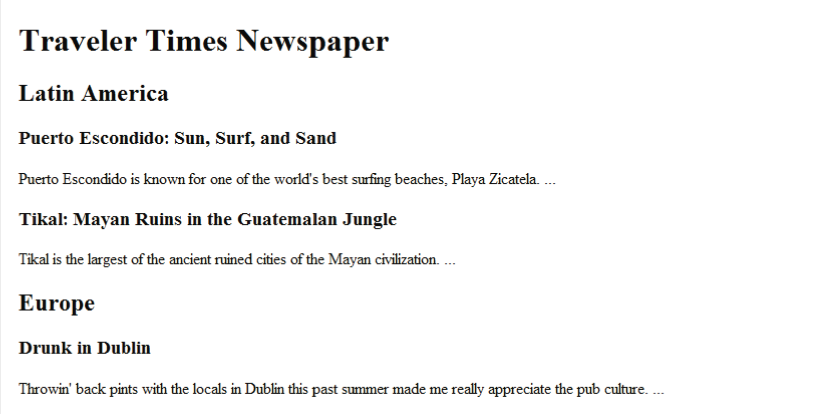

We'll begin our study of web programming by learning the core language for writing web pages: Hypertext Markup Language (HTML). HTML describes the contents of your page, such as headings, paragraphs, images, and lists. The version of HTML we'll learn is the latest and most standard, called HTML5. The pages you'll write will work in any modern browser. This chapter doesn't attempt to provide a complete list of HTML tags and attributes. Certain aspects of the language, such as forms and tables, are left for later chapters that focus on those elements.
In this section we'll discuss the basics of HTML and web pages, as well as a brief history of the language and how it came to be the way it is today. In following sections we'll dive into the details of HTML syntax for creating complex web pages.
Since its creation in 1991 by Tim Berners-Lee, one of the founding fathers of the Internet, HTML has been the dominant language for creating web pages. HTML is a language consisting of text content surrounded by markings that specify the meaning of the content. As with many languages, HTML has gone through different versions and standardization processes over the years:
The language has several major goals that are reflected in the evolution made to it over the years. Each new version has endeavored to: add new features; improve interoperability, make HTML compatible with all major browsers, platforms, and devices; and be accessible to all kinds of users, including those with disabilities affecting sight and hearing. In these chapters we will focus on HTML5, a more recently created dialect of HTML. HTML5 is a more modern and stricter language than older versions of HTML, and its syntax is more regular and standardized. HTML5 has a more clearly refined set of goals than past versions of HTML. While older HTML was a mixed language used to describe a document's content, appearance, and behavior, properly written HTML5 chooses to focus solely on describing the document's content and structure. The tasks of describing exactly how the document should look and how it should behave are handled by other languages that interact with HTML. At the time of this writing, not all web browsers support every new feature of HTML5 properly. For this reason, throughout the textbook when we show a feature that is new to HTML5, we will place the official HTML5 "shield" logo next to that feature: This way you will be aware that the feature may not work properly for users with older browsers. Every web developer must face the difficult decision between utilizing the newest features and reaching the widest possible audience. A well-written web page has the following division of responsibilities:
We will learn the HTML syntax in detail throughout this chapter and later chapters. Example 2.1 shows an initial example of a complete HTML document. Figure 2.1 shows the output when you save the above code into a file called wonderfulworld.html and open it in the Firefox browser. In general it does not matter what name you give to your HTML file, but one particular file name is worth mentioning. Most web servers consider the filename index.html (and similar names such as index.php, index.jsp, etc. ) to represent the main page for a particular web site. So if you omit the file name from a URL, index.html is assumed to be the filename. This is useful because, for example, you can tell people your web site's URL is http://www.example.com/, and when they visit that URL, they'll actually be shown the contents of http://www.example.com/index.html.
<!DOCTYPE html>
<html>
<head>
<title>What a Wonderful Worldl</title>
</head>
<body>
<hl>My first web page</hl>
<p>
A friend told me once that he thought the
in URLs stood for what a wonderful world
(I think it does!).
</p>
</body>
</html>
Example 2.1 Basic web page wonderfulworld.html
Figure 2.1 Basic web page appearance in Firefox browser
HTML is a rich and complex language that can describe not only standard text documents but also tables of data, forms for sending information to a server (such as for purchasing items from an online store), complex images and multimedia, interactive games, and more. Because the language is so rich, we will study it in layers, learning more of its features in several subsequent chapters. In this chapter, we'll learn the basics of structuring text content and images.
An HTML document is a text file named with an .html extension. It contains text content and HTML markup to tell the browser how that content should be structured. The content is information that you would like the user to see. The markup consists of tags that describe the content and tell the browser how to structure and display it.
Tags consist of a lowercase tag name surrounded by angle brackets. For example, a paragraph is represented by the <p> tag. Most tags come in pairs, with an opening tag (for example, <p>) followed by some text, followed by a closing tag (for example, </p>). A pair of HTML tags and their enclosed content are collectively called an element. Figure 2.2 summarizes the basic syntax of an HTML element.
Figure 2.2 A paragraph element
The syntax of HTML5 allows some elements to omit their closing tags under certain conditions, but it is hard to remember these cases and it is error-prone to rely on this behavior, so we will always include proper closing tags on elements in our examples.
The basic syntax of an HTML page is shown in Example 2.2. Every page we write in this textbook will have this same basic structure. When we show code examples later in the chapter and elsewhere in the book, we will show just a subset of the page, only the relevant contents of the body.
<!DOCTYPE html>
<html>
<head>
<title>page title≶title>
other resources or information about the page
</head>
<body>
page content
</body>
</html>
Example 2.2 Syntax template for a basic HTML page
The first two lines are the document type definition and opening html tag. The DOCTYPE line represents a document type definition, a declaration that our page is written using HTML5 syntax; the opening html tag specifies the beginning of the page. These lines are required if we want our page to comply with web standards. Therefore these exact two lines will appear at the top of every web page we write in this textbook, so you can copy them and paste them into the pages you write. The rest of the page consists of two major sections, the header and body. The header, represented by the head tag, contains general information about the page. The body, represented by the body tag, holds the content to display. Header information is used by the browser but not displayed on the page. The most common element in the header is title, which specifies the title text to be shown in the browser's top bar. The header also includes any CSS style sheets or JavaScript code to attach to the page. (We'll learn about those later.)
There are two types of elements: block elements and inline elements. A block element, such as a paragraph or bulleted list, generally represents a significant element of the page and can contain a large amount of content spanning many lines. A block element can contain other block and inline elements inside it, called nested elements; for example, a paragraph can contain a link. The browser displays each block element with a line break and vertical margins above and below it. In the following sections, we'll show several block elements you can place inside the page's body section.
| Element | p |
| Description | Paragraph of text (block) |
| Syntax | <p>content</p> |
Much of the content of web pages is organized into paragraphs. Each paragraph begins with the <p> tag and ends with the </p> tag. Each p (like all block elements) is displayed on its own line with a vertical margin above and below it. The web browser displays as many words of the paragraph content as will fit in the browser window and wraps the remaining content. The web browser collapses any whitespace between words in the paragraph down to a single space. It ignores spaces or line breaks you place between words and reformats the text so that there is exactly one space between words and sentences. Example 2.3 demonstrates several paragraphs and the resulting output that would appear in the browser. Notice that the line breaks and spacing in the output are unrelated to those in the HTML source code.
<p>
You wake up at Seatac, SFO, LAX. You wake up at O'Hare, Dallas-Fort
Worth, BWI. Pacific, Mountain, Central. Lose an hour, gain an hour.
This is your life, and it's ending one minute at a time.
</p>
<p>
You wake up at Air Harbor International. If you wake up at a different
time, in a different place, could you wake up as a different person?
</p>

Example 2.2 Paragraphs
We'll follow some stylistic conventions for spacing and indentation in our HTML code. We generally separate block elements by blank lines, unless their inner content is very short and fits on a single line. When the text of a paragraph spans multiple lines, we'll indent it to indicate the nesting. Since block elements can contain other block elements, we'll indicate this nesting with a line break and an increase in indentation.
| Elements | h1, h2, h3, h4, h5, h6 |
| Description | Headings to label/separate sections of the page (block) |
| Syntax | <h1>content</h1> <h2>content</h2> ... <h6>content</h6> |
Headings are used to label major sections of your page's content. There are six levels of headings, from hi to h6. Level I headings (hi) are usually for page titles, second degree headings (h2) are usually for major section headings, third degree headings (h3 ) are subsections of h2 elements, and so on. Lower level headings should only be used under headings of the next higher level; for example, you shouldn't use an h3 unless there is a preceding h2 and the h3 represents a subsection inside that h2's content. In this way, headings represent a hierarchy of the sections of a web page.
To reflect this hierarchy, by default the browser displays the six heading levels at different sizes. An hi is the largest header, and h6 is the smallest. On most browsers hi through h3 display with a size larger than normal text, h4 text is about the same size as normal, and h5 and h6 display heading text smaller than normal. (Later we'll learn how to change this if so desired.)
Example 2.4 demonstrates several headings.
<h1>Traveler Times Newspaper</h1>
<h2> Latin America </h2>
<Puerto Escondido: Sun, Surf, and Sand </h3>
<p>
Puerto Escondido is known for one of the world s
best surfing beaches, Playa Zicatela. ...
</p>
<h3>Tikal: Mayan Ruins in the Guatemalan Jungle</h3>
<p>
Tikal is the largest of the ancient ruined cities
of the Mayan civilization. ...
</p>
<h2>Europe</h2>
<h3>Drunk in Dublin</h3>
<p>
Throwin back pints with the locals in Dublin this past
summer made me really appreciate the pub culture. ...
</p>

Some web developers make th mistake of choosing tags based on how tag looks in the browser. They'll make decision like, "An h1 looks too large when I use it as the page's main header, so I'll use an h3 instead." This mistaken line of thinking causes other poor decisions, suche as creating a blank p paragraph element to get a vaertical spacing between two other elements on the page.